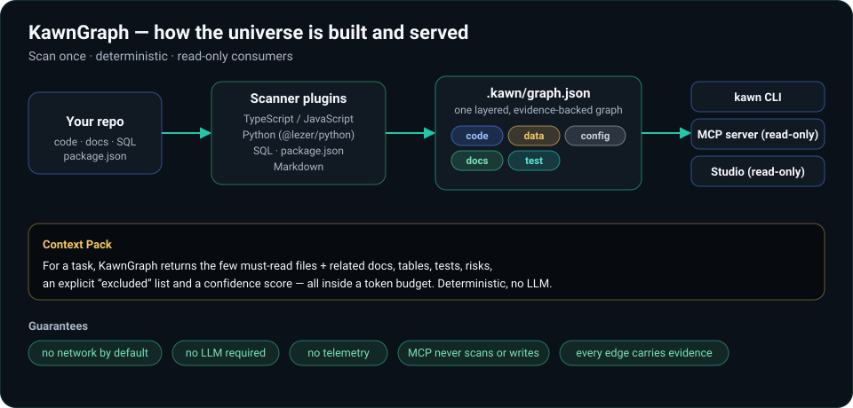
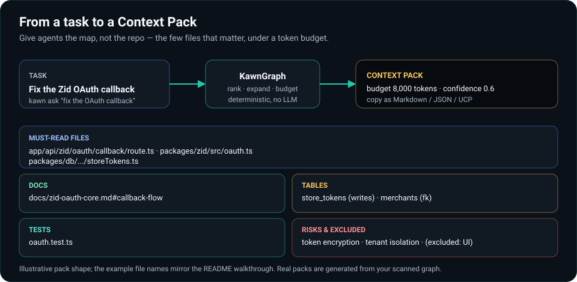
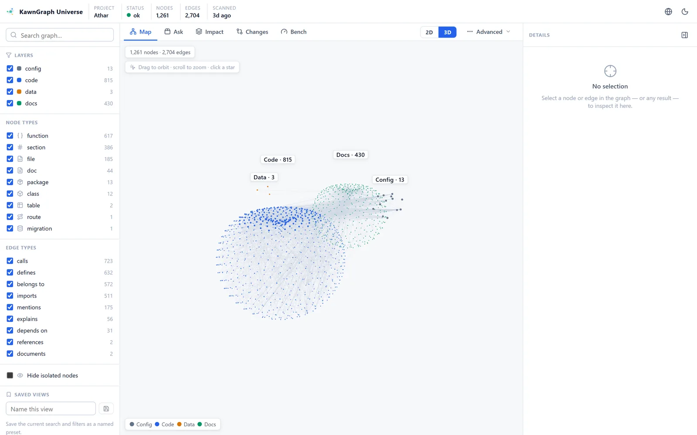
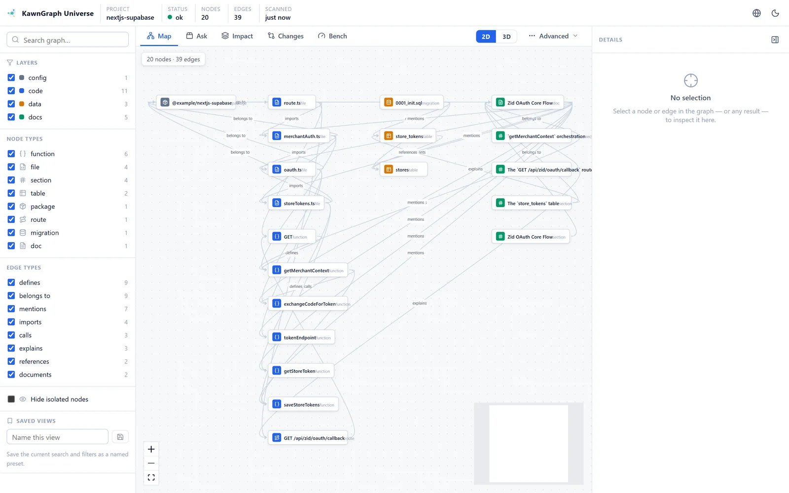

Scan
Read project structure locally: code, Markdown, SQL, packages, tests, and Git changes.
The Agent Context Universe
KawnGraph scans code, docs, data, tests, and Git changes into an evidence-backed project graph, then gives coding agents focused Context Packs for the task at hand.
npx kawngraph setup
[PASS] Agent Context Graph: fresh
[PASS] MCP server resolvable: npx -y @kawngraph/mcp@0.1.1
[PASS] MCP handshake + retrieval
[PASS] Integration: claude, codex
healthy - 5 pass - 0 warn - 0 failThe problem
When you give an agent a task, it usually starts by reading — a lot. It opens dozens of files, re-derives how routes reach the database, and rebuilds the same mental model every request. That is slow, token-expensive, and often inaccurate: the agent misses the one file that matters and drowns in five that do not.
How it works
Read project structure locally: code, Markdown, SQL, packages, tests, and Git changes.
Build a layered graph with evidence on relationships, stable IDs, and freshness metadata.
Return the few files, docs, tables, risks, and tests relevant to a specific task.
Expose retrieval through CLI, MCP, and Studio without making agents read the full repo.

files, functions, classes, imports, calls, routes
SQL tables, migrations, foreign keys
workspace packages, dependencies
markdown sections, links, mentions
tests and what they cover
Context Packs

$ kawn ask "fix the Zid OAuth callback that writes store tokens"
Must-read
app/api/zid/oauth/callback/route.ts entry route
packages/zid/src/oauth.ts token exchange
packages/db/.../storeTokens.ts writes store_tokens
Docs
docs/zid-oauth-core.md#callback-flow expected behaviour
Tables store_tokens (written) · merchants (fk)
Tests oauth.test.ts
Risks token encryption · tenant isolation
Excluded unrelated UI (over budget) · confidence 0.6Read-only MCP
kawn_context
Token-budgeted Context Pack for a task.
kawn_query
Ranked, mode-scoped search over the graph.
kawn_affected
Reverse impact: what depends on a symbol.
kawn_changes
Impact of the current change set. Local git only.
Agent support
Studio
kawn map opens a local, read-only explorer for the
existing .kawn/graph.json: an interactive 2D graph, a
scalable 3D Universe view, a Context Pack builder, reverse-impact,
Git change views, and benchmark reports. Served over
127.0.0.1 — it never scans, rebuilds, or writes.


Benchmarks
KawnGraph ships a local A/B harness that runs the same agent on the same task with vs without KawnGraph. Results are honest and task-dependent — including neutral and negative cases. It can reduce repository exploration on unfamiliar multi-file work, while adding overhead on already-focused tasks.
Read the methodologyPrivacy model
KawnGraph does not phone home during scan or retrieval.
Core scanning and Context Packs are deterministic.
Agent integrations are reversible and scoped to the repository.
Install
npx kawngraph setup
kawn check
kawn map
kawn ask "fix the OAuth callback"